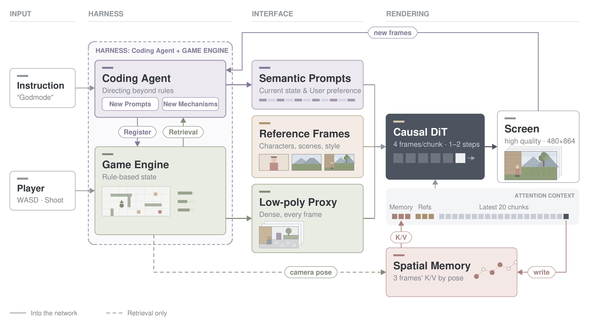

A game engine keeps the world state and draws a cheap low-poly proxy. A VLM decides whatever the rules cannot. A few-step causal video model turns every chunk into a finished frame on a single consumer GPU.游戏引擎维护世界状态，画出一份廉价的低模代理画面。规则决定不了的事交给 VLM。少步数的因果视频模型在一张消费级显卡上，把每个块渲染成成品画面。
Interactive world models that only roll out pixels keep the world state implicit: once something leaves the view it is gone, and game rules have to be re-inferred from every frame. We wrap the video model in a harness that owns the state. The game engine evolves everything the rules can decide and renders it as a low-poly proxy. The VLM takes over where rules run out: it turns states into prompts, reasons about how the world should evolve, and registers its decisions back into the engine.只靠逐帧外推像素的交互式世界模型，世界状态都是隐式的：东西一离开视野就消失，游戏规则也要从每一帧里重新推断。我们给视频模型套上一层 Harness，由它持有世界状态。规则能决定的状态演化全部交给游戏引擎，引擎再把结果渲染成低模代理画面。规则管不到的地方由 VLM 接手：它把状态写成 prompt，推理世界接下来该怎样演化，再把决定注册回游戏引擎。
The video model then only has to render. It reads the per-frame proxy, a dynamic caption and a few reference frames, and generates one latent (four frames) per step with a causal DiT distilled to one or two denoising steps.于是视频模型只需要负责渲染。它读入逐帧的低模代理画面、一条动态描述和几张参考帧，用蒸馏到一到两步去噪的因果 DiT，每一步生成一个 latent（四帧）。

A held-out clip from the desert courtyard scene. The engine provides only the left column; the middle column is generated chunk by chunk; the right column is the ground-truth render for reference.沙漠庭院场景的一段留出评测片段。引擎只提供左列；中列逐块生成；右列是真值渲染，仅作参照。
Three continuous sessions, 54 to 99 seconds each. Left of the divider is the generated frame, shown with the game HUD and the key inputs; right of it is the engine's low-poly proxy. Drag the divider to compare, and turn the sound on to hear the game audio.三个游戏各一段不间断的游玩，每段 54 到 99 秒。分割线左侧是生成画面，带游戏界面和当时的按键；右侧是引擎低模。拖动分割线对比，点「打开声音」可以听游戏音效。
Four held-out clips per game, 15 seconds each. Left of the divider is the generated frame, right of it is the engine's low-poly proxy. Drag the divider with a mouse or a finger. Both halves are cut from the same video frame, so they never drift apart.每个游戏取四段留出评测片段，每段 15 秒。分割线左侧是生成画面，右侧是引擎低模，用鼠标或手指拖动分割线即可对比。两半取自同一帧视频，始终逐帧同步。
@misc{matrixgame4,
title = {Matrix-Game 4.0},
author = {To be announced},
year = {2026},
note = {Project page preview}
}